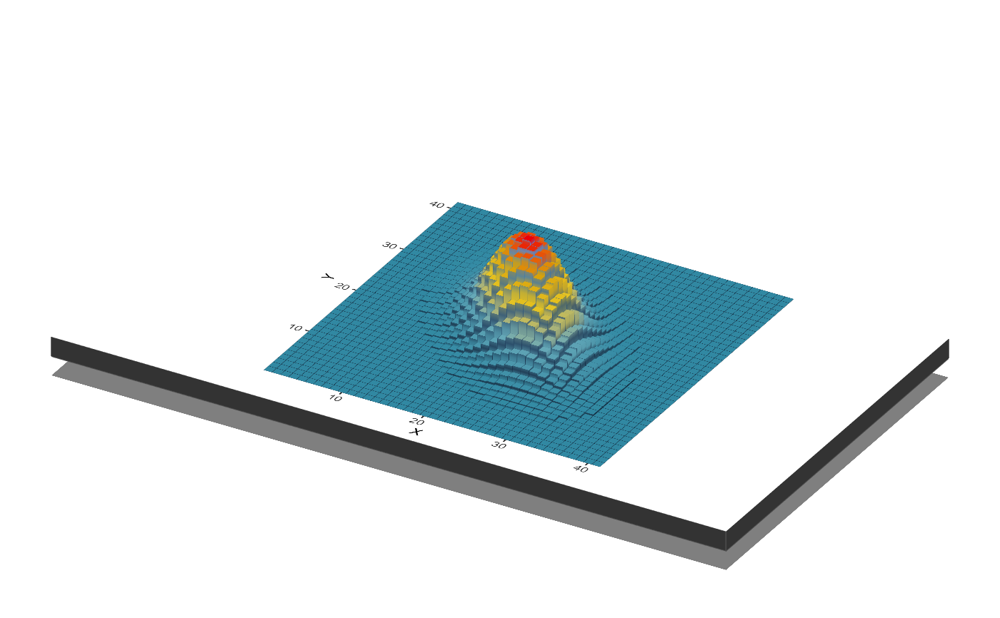
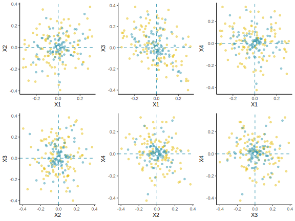

Don’t use the sample mean if \(m > 3\)!
Estimating the mean of a multivariate Gaussian using the sample mean is inadmissible
R
Gaussian distribution / distribución gaussiana
multivariate estimation / estimación multivariada
admissibility / admisibilidad
frequentist statistics / estadística frecuentista
James–Stein estimator / estimador de James–Stein
Abstract
In this entry we discuss the James–Stein estimator of the mean of a multivariate Gaussian and show that it has a better mean squared error than the sample mean thus rendering the sample mean as an inadmissible estimator.

The dimension problem
For a gaussian distribution, the classical estimator for the mean - the sample mean \(\bar{x}\) - is the “best” estimator of \(\mu\) (Casella and Berger 2021).1 It is unbiased, consistent, efficient, what else can you wish for?2
